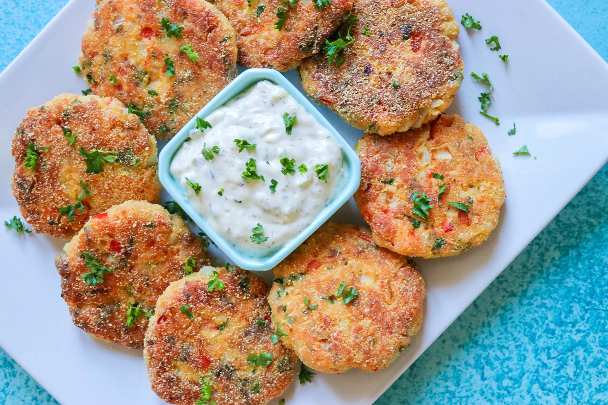

These croquettes are made with fresh salmon,
but still cook really quickly.
They are great to snack on as an appetizer dipped into some tartar or
remoulade sauce, over a green salad,
or with some wild rice and veggies on the side.

Ingredients
Decrease Serving
1 pound boneless, skinless salmon fillets
½ cup baking mix
½ cup diced onion
¼ cup diced red bell pepper
¼ cup freshly chopped parsley
1 large egg
3 cloves garlic, minced
½ teaspoon Worcestershire sauce
¼ teaspoon seasoned salt
¼ teaspoon seafood seasoning
⅓ cup cornmeal
2 tablespoons vegetable oil
DirectionsInstructions Checklist
Step 1
Finely chop the salmon using a food processor.
Step 2
Transfer salmon to a bowl with baking mix, onion, bell pepper,
parsley, egg, garlic, Worcestershire, seasoned salt, and seafood seasoning.
Mix until the ingredients are well blended.
Step 3
Form the mixture into 8 small patties, and place onto a plate lined with waxed paper.
If you are struggling to form the patties due to the mixture being sticky,
rinse your hands after forming every few patties,
as the mixture is easier to work with while your hands are clean.
Refrigerate the patties for 30 minutes.
Step 4
Heat the vegetable oil in a skillet over medium heat.
Place the cornmeal into a shallow dish and dredge each patty in the cornmeal,
pressing lightly so that the cornmeal adheres to both sides of the patties.
Step 5
Working in batches, cook the patties in the oil until golden and cooked through,
3 to 4 minutes per side.